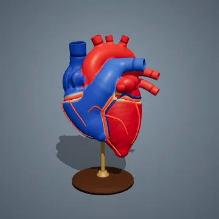

Human Heart
The pump at the middle of the circulatory system, with its great vessels in place.
- It has four chambers: two atria that receive blood and two ventricles that push it out.
- A resting adult heart beats about 100,000 times a day.
- Red in this model means blood carrying oxygen; blue means blood returning to collect more.
Real size: About the size of a closed fist, roughly 5 inches long. This model: Greatly enlarged.
Try this: Give it a program that changes its size up and down to make it beat.